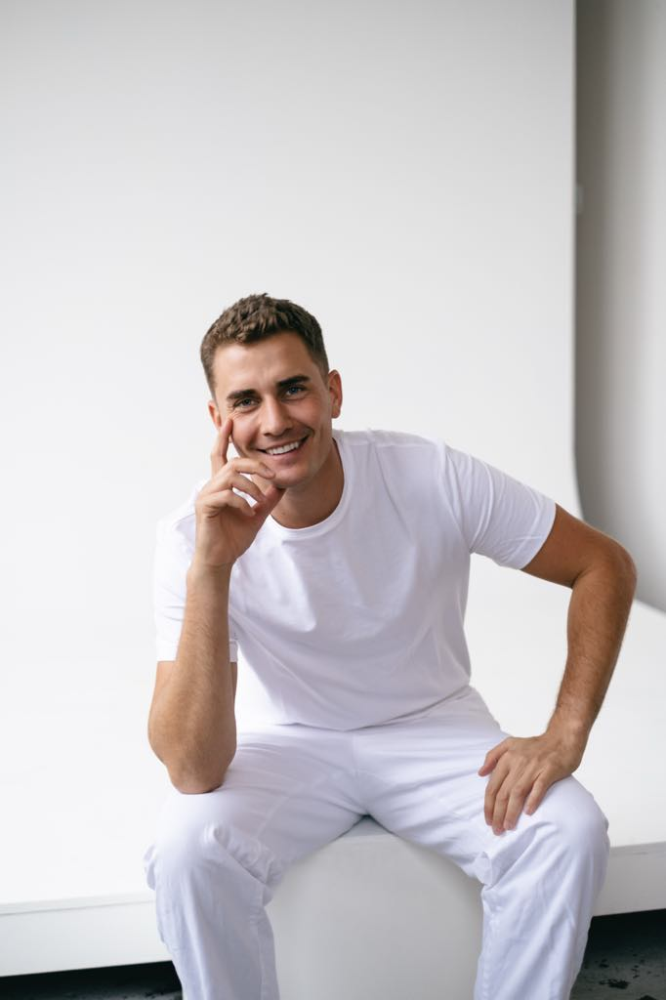
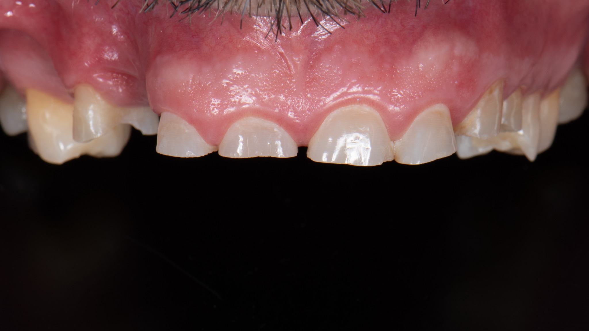
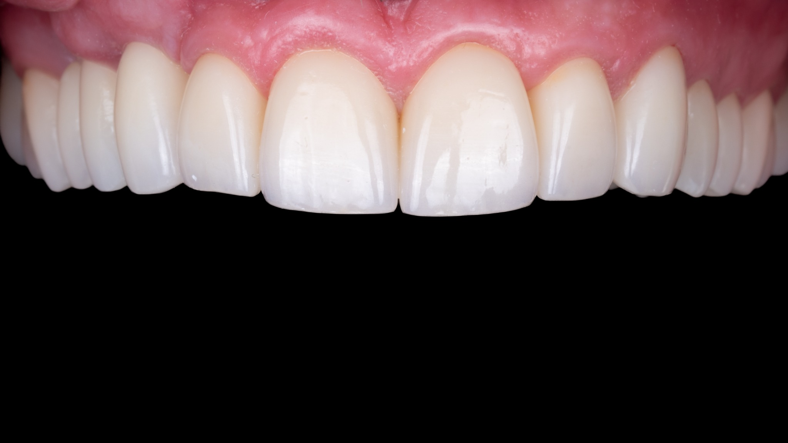

Služby
Dental Hygiene
Profesionální čištění a prevence onemocnění dutiny ústní.
Implantologie
Bezpečná náhrada chybějících zubů pomocí titanových implantátů.
Protetika
Korunky, můstky a fazety pro dokonalý vzhled i funkci.
Záchovná stomatologie
Šetrné ošetření kazů moderními materiály.
Reendodoncie s mikroskopem
Opakované ošetření kořenových kanálků pod mikroskopem.
Chirurgie
Bezbolestné chirurgické zákroky včetně odstranění zubů moudrosti.
Bělení
Bezpečné ordinační a domácí bělení zubů.
Estetické rekonstrukce
Kompozitní a keramické výplně pro přirozený úsměv.
Můj tým

MUDr. Jonáš Celerýn
Vedoucí lékař – protetika a estetická stomatologie.
Ukázky prací
Přejeďte myší přes fotografii a podívejte se na výsledek před & po.

